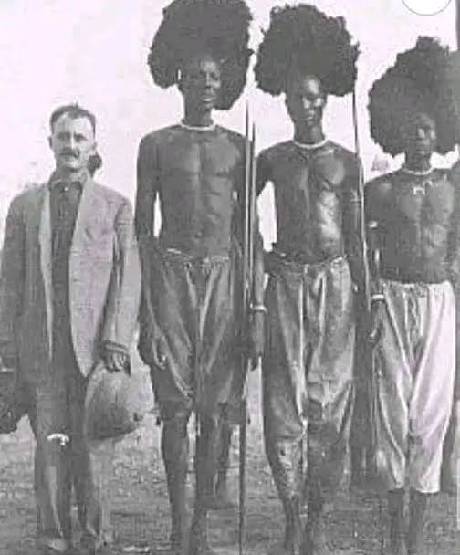

Who We Are
About RUMYU-UG
Connecting the youth of Rumbek for a brighter, united future. Rooted in culture, driven by service.
Our Roots
A Legacy of Unity and Resilience
The Rumbek Youth Union (RUMYU) is one of the oldest community youth organisations representing the Agar Dinka community. Published historical accounts trace its founding to Khartoum, Sudan in the mid-1980s (reported as 1986, though some sources note 1987).
Following its establishment, the union experienced a powerful revival in Rumbek in the late 1990s. Since then, it has grown into a significant global community-serving institution with a documented presence in Juba, Kampala, Egypt, Kenya, Australia, the USA, and Canada.
The Uganda Chapter (RUMYU-UG) exists to serve Rumbek youth, students, and families living in Uganda, fostering a spirit of togetherness and mutual support.
Opens official source in a new tab

Our Mandate
Empowering Youth & Preserving Culture
Wherever we are in the world, RUMYU is dedicated to guiding the next generation.
Safety & Guidance
Helping our youth stay safe and navigate life in foreign lands with confidence.
Focus on Education
Prioritizing academic excellence and mentorship for students living abroad.
Teaching Culture
Instilling the rich traditions and language of the Agar Dinka community in our children.
Leadership & Unity
Training young leaders to foster peace, unity, and positive representation.
What Drives Us
Mission, Vision & Values
Our Mission
To unite and empower Rumbek youth globally through leadership, education, mutual support, and cultural pride, in service of peace and community welfare.
Our Vision
A united, educated, and peaceful Rumbek youth community that contributes positively to Uganda, South Sudan, and the global diaspora.
Standing together across the three counties and beyond.
Promoting reconciliation and non-violence.
Preserving our rich Agar Dinka heritage.
Giving back to our community and host countries.
Be Part of Our Story
Join us in building a stronger, more united community for generations to come.
Become a Member